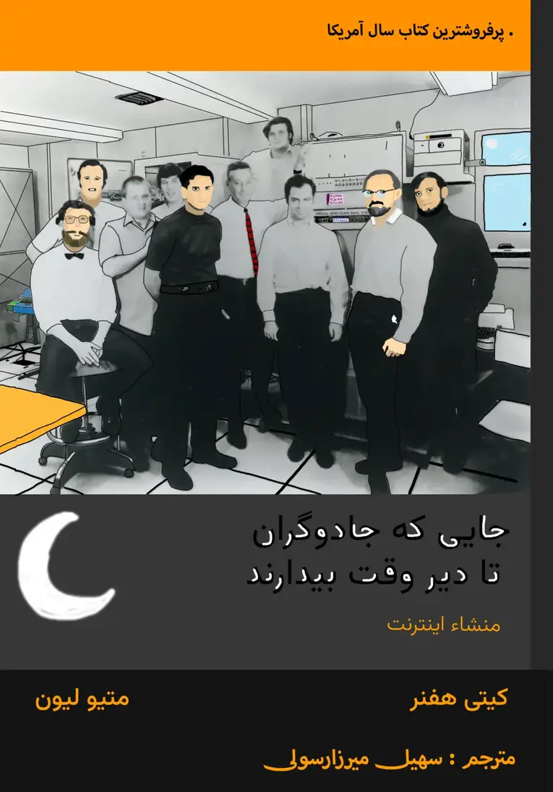

جایی که جادوگران تا دیروقت بیدارند
22 Dec 2023 ابتدا قرار بود این کتاب به شکل عادی به چاپ برسد اما با مشکلات نامعقولی برخورد کرد. و از اونجایی که تمام کتاب، الهام بخش رشد در آزادی و پتانسیل عجیب آن است در نتیجه گفتم چرا که نه؟ کتاب در مورد اینترنت آزاده، پس منم روی همین اینترنت منتشرش میکنم.
و شد این کتابی که اکنون میبینید :)
متاسفانه همچنان شیوه مشخصی برای خرید نسخه چاپی کتاب وجود ندارد، ولی (حمایت) و معرفی این کتاب توسط شما، میتونه به گسترش این مسیر کمک کند.
هر صحبت و نظری هم داشتید میتونید به soheil.star164+book@gmail.com ایمیل بزنید.
ابتدای ابتدا
مسیر این کتاب از تصمیمات هوشمندانه یک رئیس جمهور و پاسخ مشترک به دغدغههای متفاوت آغاز میشود، و با مدیریت و راهبردهای درست ادامه مییابد. مسیری با تاکید برگفتوگو، مشارکت و ترویج همکاری. جایی که جادوگران تا دیروقت بیدارند تا چیزی را خلق کنند که مستقل از هر حکومت و قانونی، بزرگ میشود، تکامل مییابد، هنجارهای خودش را میسازد و تبدیل میشود به جامعهای که اکنون حدود 5 میلیارد کاربر دارد و همچنان در مسیر آزادی پیش میرود.
برای شروع کتاب روی دکمه Dial کلیک کنید :)
در ضمن فصل هفتم هم یه بازی کوچولو مرتبط با فصل داره(ادونچر)